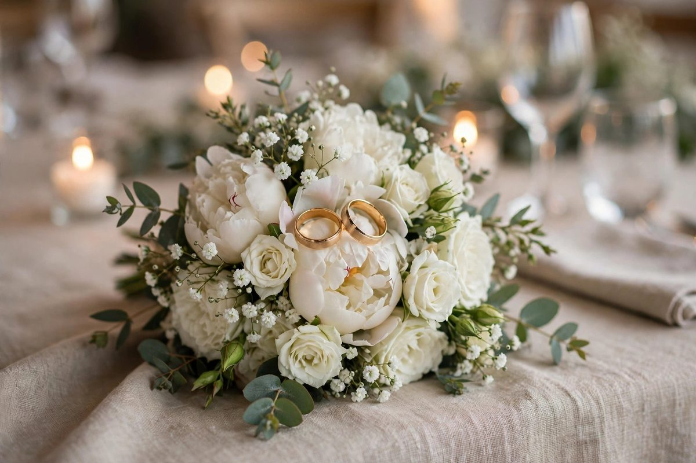
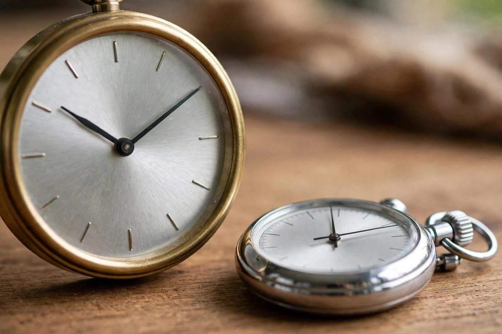
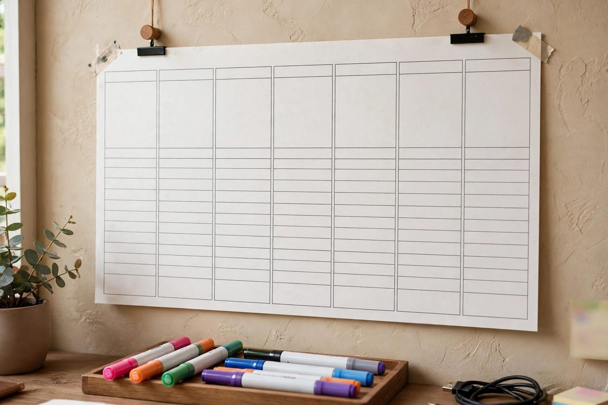
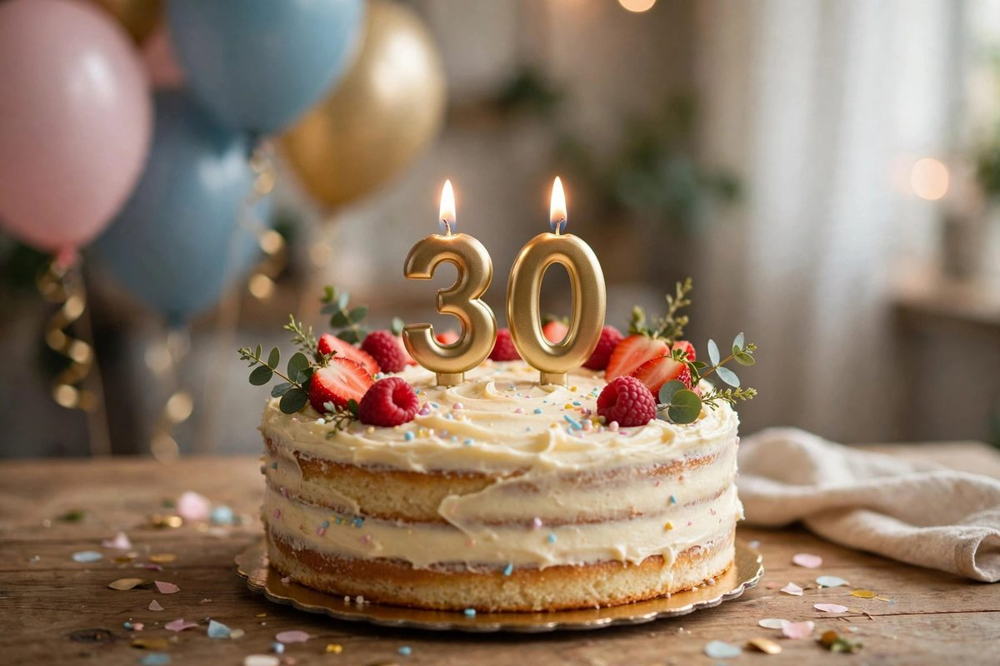
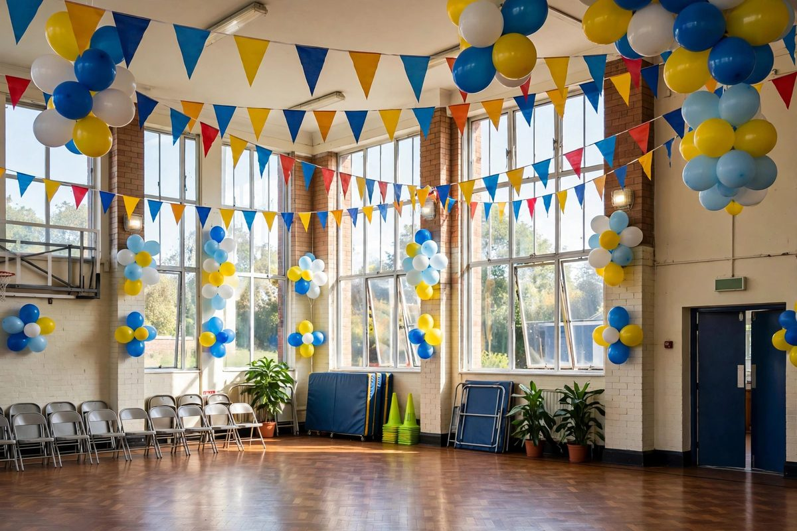

Countdown Timer
Count down to any date, event or birthday with a live, second-by-second timer.
How it works
Countdown Timer is a free, simple tool that works entirely in your browser. Start with our guide on how to set a countdown timer countdown timer for birthdays countdown to new year countdown timer for exams countdown timer for weddings how countdown timers work, then open the main tool and try it yourself. Everything is explained in plain language, with worked examples and practical steps you can follow today.
Each tool on this site is free and needs no account. Your data, where a tool stores any, stays on your own device. Read the guides below to learn how to get the most from each tool, avoid common mistakes, and build a routine that lasts.
Our tools
Countdown Timer
Set any date and time and watch the days, hours, minutes and seconds tick down live.
Guides
How to Set a Countdown Timer
Setting a countdown timer takes less than a minute once you know the date you are counting toward.
Countdown Timer for Birthdays
A birthday countdown turns a date on a calendar into something you can watch getting closer every day.
Countdown to New Year
A New Year countdown is the simplest way to mark the end of one year and the start of the next.
Countdown Timer for Exams
An exam countdown gives your study plan a clear deadline and a daily reminder of how much time is left.

Countdown Timer for Weddings
A wedding countdown helps couples, families and guests follow the wait for the big day together.

How Countdown Timers Work
A countdown timer is a simple idea: it takes a future date and subtracts the current time from it, again and again.
Countdown Timer for Work Deadlines
A deadline countdown makes a distant due date visible, so a project stops feeling like it can wait forever.
Countdown to Christmas
A Christmas countdown is a family favourite, especially for children waiting for the holiday to arrive.
Countdown Timer for Travel
A travel countdown builds excitement for a holiday and keeps the practical jobs on schedule too.

Recurring Countdown Explained
Some events come back every week or every month, and a recurring countdown tracks the next one automatically.
Countdown Timer for a Product Launch
A launch countdown builds interest before release day and keeps the whole team focused on the same date.

Age Countdown Explained
An age countdown shows your exact age today and how long remains until your next birthday.
Countdown Timer for Retirement
A retirement countdown turns a long career plan into a date you can watch approach year by year.
Countdown Timer for Sports Events
Fans use a sports countdown to follow the wait for a match, a tournament or a season opener.
Countdown Timer Mistakes to Avoid
Countdown timers are simple, but a few common mistakes can make the result confusing or wrong.
Countdown Timer for Anniversaries
An anniversary countdown is a small, thoughtful way to mark a date that matters to two people.

Countdown Timer for School Events
Schools use countdowns for term dates, exams, trips and end-of-year events that students look forward to.
Countdown Timer for Job Interviews
An interview countdown keeps preparation on track and stops the date from creeping up unnoticed.
Countdown Timer for Holidays
A holiday countdown works for any public holiday, festival or family celebration with a fixed date.
Countdown Timer for Goals
A goal countdown gives a personal target a deadline, which makes it far easier to plan and to keep.
Frequently asked questions
Is the countdown timer free to use?
Yes. Every tool on this site is free, works in your browser and needs no account or sign-up.
Does the timer keep running if I close the page?
The live display runs while the page is open. Save or bookmark the page with your date set and reopen it to see the updated count.
Can I count down to a past date?
Yes. If the date has passed, the timer shows how much time has gone by since that date instead.
Does the timer use my local time?
Yes. All dates and times use the time zone set on your device, so the count matches your local clock.
Can I use it on my phone?
Yes. The timer and all tools are responsive and work on phones, tablets and desktop computers.
What events work best with a countdown?
Birthdays, holidays, exams, weddings, travel dates, product launches, deadlines and any goal with a fixed date.